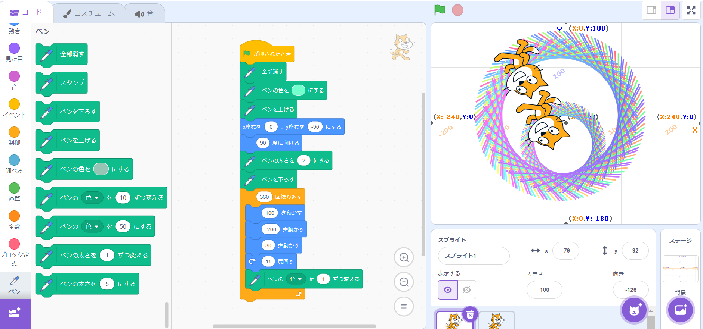
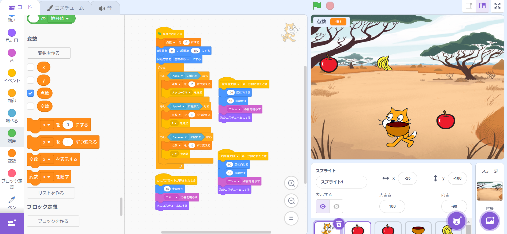

1-1 サイエンスアート

1.内容
スクラッチを使って線を書くプログラムを作成した。
内側と外側でペンの太さを変え、線どうしの間隔を狭くし、繰り返し回数を増やした。
また、ペンの色を始めに指定することで、毎回同じ色で動作するようにした。
2.感想
色どうしの重なりを表現するために太さ、間隔、繰り返し回数を変化させることで思うように動かすことができた。
中心が(0,0)になっていないので、次はそこを修正したい。
また、内側の円と外側の縁でそれぞれユーザーが設定した色で始められるようなプログラムを組みたい。
1-2 ゲーム

1.内容
スクラッチを使ってりんごとバナナをキャッチするプログラムを作成した。
バナナは落ちてくるスピードが速く小さいため、キャッチできた際の点数をりんごに比べて5点高く設定した。
また、ねことかごを同時に動かすようなプログラムを組み、かごでキャッチしているように見せた。
2.感想
キーが押されたときや、似た動きをするスプライトのプログラムを組む際に複製を利用したため、
少しの修正のみで済み、手早く作成することができた。
もう少しねこの動きがスムーズになるように改善したい。
また、ゲームの要素としてキャッチしてはいけないものを落とし、キャッチしてしまったら点数を引く、や、
制限時間をつけてプレイヤー同士でランキングを表示するといったことを追加したい。